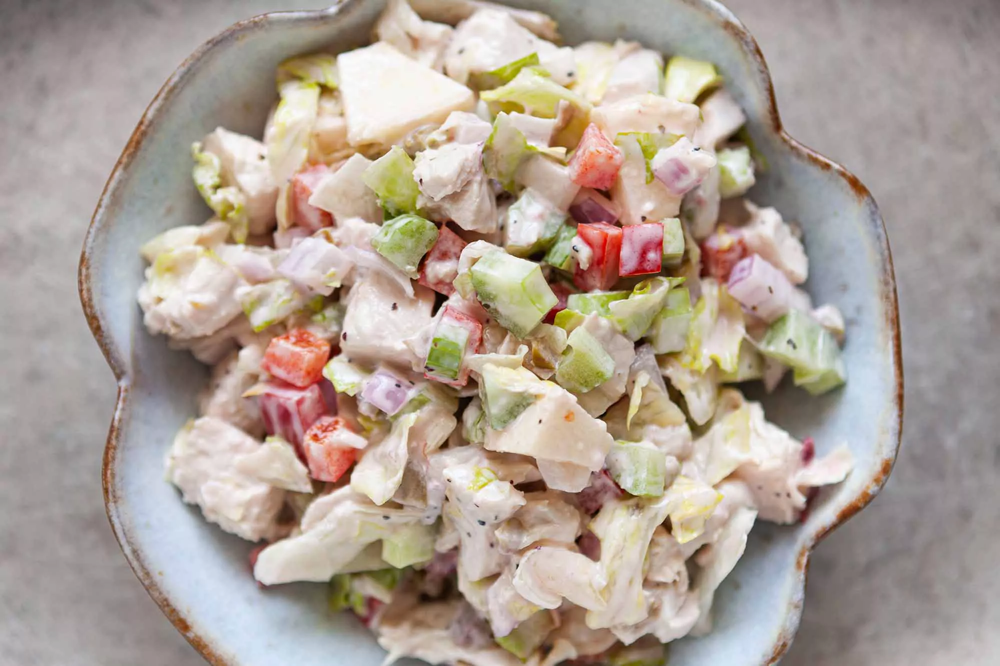

My mother and father make the best chicken salad.
It's a joint effort; my father assembles the ingredients,
while my mom makes the dressing.
It's not exactly your standard chicken salad.
They like to include chopped apple for a sweet note,
and also chopped green olives for their tangy saltiness.

Ingredients
For the salad:
2 to 3 cups cooked chicken meat
2 stalks celery, chopped
1/2 red bell pepper, seeded and chopped
4 to 6 green olives, pitted and minced
1/4 cup chopped red onion
1/2 to 1 whole apple, cored and chopped
1/3 head iceberg head lettuce, sliced and chopped
For the dressing:
5 tablespoons mayonnaise
1 tablespoon plum preserves, or any sweet berry preserve (or a lesser amount of honey)
2 teaspoons fresh squeezed lemon juice
Salt and pepper to taste
Method
Poach the chicken (skip if using already cooked chicken):
Bring a pot with 2 quarts of well salted water (1 tablespoon salt) to a boil.
Add the chicken breast (cut into large chunks) and return the water to a simmer.
Then turn off the heat, and cover the pot.
Let the chicken sit for 15 minutesor more while you prepare everything else.
Make the dressing:
Prepare the chicken salad dressing in a large bowl.
Mix together the mayonnaise, preserves, and lemon juice.
Taste for the proper balance of sweetness and acidity.
The salad dressing should not be too sweet, nor too sour.
Add more preserves or lemon juice until you have reached the balance you want.
Add salt and pepper to taste.
Mix in the chopped celery, bell pepper, olives, red onion, and apple
Dice the chicken, mix with dressing and vegetables:
Remove the chicken from the poaching water and dice it.
(Or dice already cooked chicken if that is what you are using for this salad.)
Mix it in with the dressing and vegetables.
Add lettuce:
At this point you can make ahead. When ready to serve,
fold in the sliced and chopped iceberg lettuce.